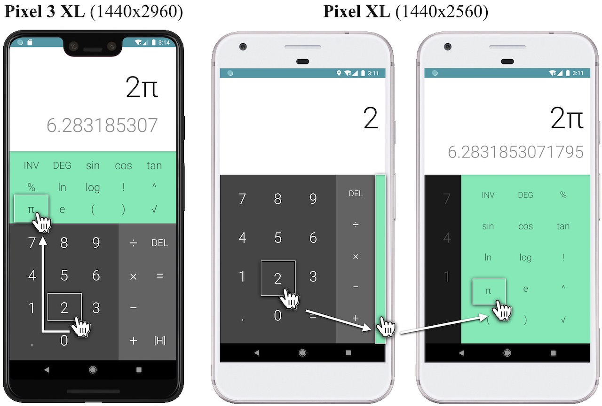

Overview
复习
- 应用视角的操作系统
- 对象 + API
- 硬件视角的操作系统
- 一个控制了整个计算机硬件的程序
本次课回答的问题
- Q: 一个真正 “实用” 的操作系统还需要什么？
本次课主要内容
- Android 应用和系统
走向移动互联网时代
一次、再一次，改变世界
Android
- Linux + Framework + JVM
- 在 Linux/Java 上做了个二次开发？
- 并不完全是：Android 定义了
应用模型
- 支持 Java 是一个非常高瞻远瞩的决定
- Qualcomm MSM7201
- ARMv6 指令集
- 528MHz x 1CPU, 顺序八级流水线
- TSMC 90nm
- “跑个地图都会卡”
- 但摩尔定律生效了！
- Qualcomm MSM7201
Android Apps
一个运行在 Java 虚拟机 (Android Runtime) 上的应用程序
- Platform (Framework)
- NDK (Native Development Kit)
- Java Native Interface (C/C++ 代码)
官方文档 (RTFM)
- Kotlin
- Platform
- android.view.View: “the basic building block for user interface components”
- android.webkit.WebView - 嵌入应用的网页
- android.hardware.camera2 - 相机
- android.database.database - 数据库
Android 应用
“四大组件”

Activity
- 应用程序的 UI 界面 (Event Driven)
- 存在一个 Activity Stack (应用拉起)
Service
- 无界面的后台服务
Broadcast
- 接受系统消息，做出反应
- 例如 “插上电源”、“Wifi 断开”
ContentProvider
- 可以在应用间共享的数据存储 (insert, update, query, ...)
例子：计算器

- AndroidManifest.xml - 应用的 “元数据”
- 例如需要的权限、监听的 Intents 等
- res - 资源文件
- 各国语言的翻译
- 图片文件 (例如图标)
- 编写应用逻辑只需要重载 Activity 的 onCreate, ... 即可
Android 系统
Platform API 之下：一个 “微内核”

通过 “Binder IPC”
- Remote Procedure Call (RPC)
remote.transact()
- 在性能优化和易用之间的权衡
- 注册机制
- 相比之下，管道/套接字就太 “底层” 了，需要手工管理的东西太多
- 基于共享内存实现
- Linux Kernel binder driver
- 服务端线程池
- 注册机制
然后……海量的代码
例子：如何杀死一个 Android 进程？
- RTFSC: ActivityManagerService.java
- Android 每个 App 都有独立的 uid
- 遍历进程表，找到属于 uid 的进程
- Process.KillProcessGroup
- 间隔 5ms，连续杀死 40 次，防止数据竞争
- Operating System Transactions 的必要性
那么，我们是不是就可以利用数据竞争进程保活了呢？
- 成为孤儿进程从而不会立即收到 SIGKILL 信号
- 在被杀死后立即唤醒另一个进程: flock-demo.c
- A lightweight framework for fine-grained lifecycle control of Android applications (EuroSys'19); “diehard apps”
一个真正的 “操作系统”
adb (Android Debug Bridge)
- adb push/pull/install
- adb shell
- screencap /sdcard/screen.png
- sendevent
- adb forward
- adb logcat/jdwp
一系列衍生的工具
- 开发者选项
- scrcpy
- Monkey/UI Automator
拥抱变化的世界
我们也试着蹭一波热度 (也决定不再蹭了)
- Cross-device record and replay for Android apps (ESEC/FSE'22, Under review)
- Detecting non-crashing functional bugs in Android apps via deep-state differential analysis (ESEC/FSE'22, Under review)
- Push-button synthesis of watch companions for Android apps (ICSE'22)
- ComboDroid: Generating high-quality test inputs for Android apps via use case combinations (ICSE'20)
- Characterizing and detecting inefficient image displaying issues in Android apps (SANER'19)
- ...
- User guided automation for testing mobile apps (APSEC'14)
总结
总结
本次课回答的问题
- Q: 一个真正 “实用” 的操作系统 (生态) 是如何构成的？
Takeaway messages
- 服务、服务、服务
- Android Platform API
- Google Mobile Service (GMS)
- 海量的工程细节
- 复杂系统无处不在
- 能驾驭整个系统复杂性的架构师
- 大量高水准的工程师，他们都在哪里？